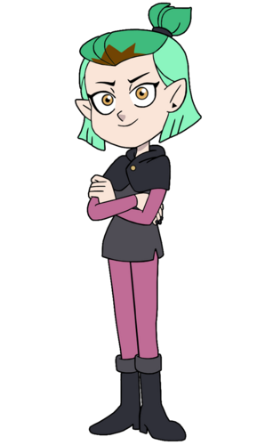
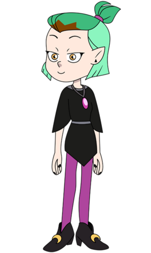

Amity Blight


Seslendiren:Mae Whitman
Tam İsim:Amity Blight
Diğer isimler:Mittens, Grom Queen, Miss Blight
Yaş:14
Cinsiyet:kız
Tür:Cadı
Meslek:Hexside'da Öğrenci
Amaç:Hexside'da "En iyi Öğrenci" olmak
Sınıf:Abomination
Akrabalar:Odalia Blight, Alador Blight, Emira Blight, Edric Blight
Sevdiği şeyler:Büyü, En iyisi olmak, "The Good Witch Azura", Penstagram, çizim, Luz
Sevmediği şeyler:Kaybetmek, Kandırılmak, kendisine "Mittens" denmesi, Başının belaya girmesi, Hooty
Kullanabildiği Silahlar:Baykuş Asası, glif kartları
Yetenekler:Abomination yaratmak ve yönetmek, bariyer, yoketme, bitki, ateş büyüsü
Amity Blight, Baykuş Evi dizisinin yan karakteridir. Çok yetenekli genç bir cadıdır. İlk başta düşman olarak gösterilmesine rağmen daha sonra Luz'a karşı yumuşamıştır.
Görünüş
Amity, zayıf, saçını önünden çekerek atkuyruğu olan ve saçları çenesinde olan, parlak altın gözleri olan bir kızdır. Çoğu cadı gibi sivri kulakları vardır. Amity'nin saçları iki tondan oluşur. Kahverengi ve açık kahverengi.
Okulda iken gri bir kemer ve şapkası olan bir 'tunik' giyer. Abomination sınıfının bir parçası olarak kolları ve taytı grimsi pembe rengindedir. Üçgen siyah küpeler ve siyah ojesi vardır. Koyu gri topuklu bot giyer.
Okulda değil iken siyah bir el
Kişilik
Nazik kalpli ve davranışları garip bir kızdır. Akranları, okul personeli ve annesi tarafından garip biridir. Aşırı kararlılığı ve uyum göstermemesi, sosyal yaşamının ve okul performansının kötü olmasına sebep olur.
Akıllı, yaratıcı ve hızlı fikir üretir.
Buna karşın Luz bazı sahnelerde çok içe dönüktür. Örnek olarak Amity'e kağıda glif yapmayı gösterirken.
Tip olarak neşeli ve iyi huylu olmasına rağmen ne zaman çizgiyi çekiceğini bilir. Örneğin "Sense and Insensitivity" bölümünde Kral ile kitap yazarken Kral'ın Luz'un fikirlerini çöpe atmasına çok sinirlenmiştir.
Duygularını ifade ederken aralara bazen İspanyolca kelimeler sıkıştırır.